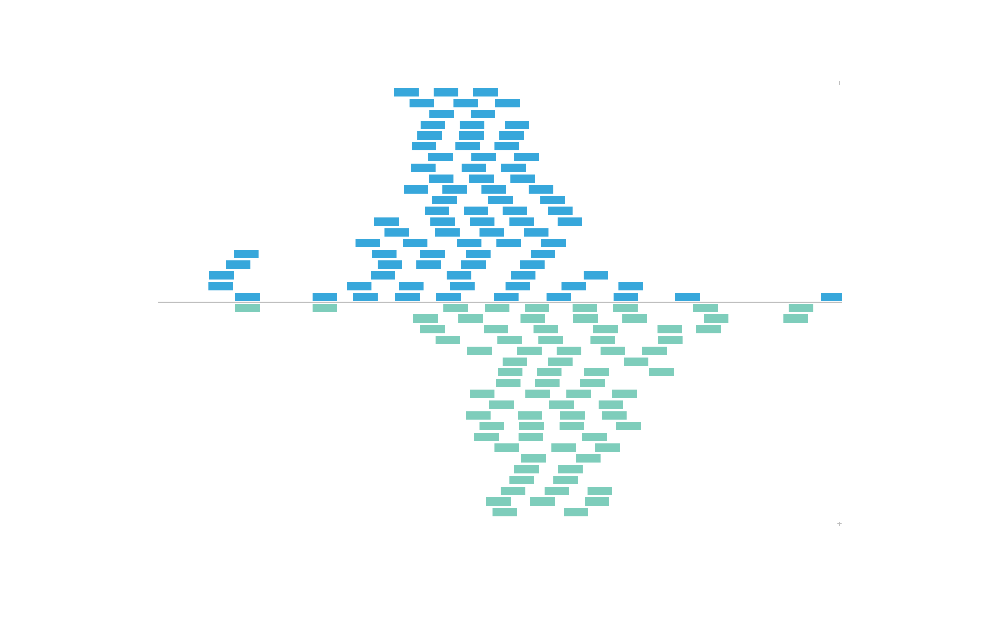
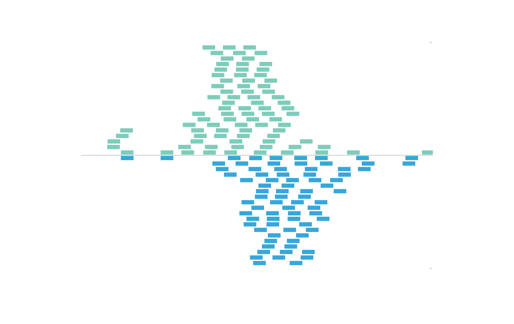

vignettes/guides/plotgardener_meta_functions.Rmd
plotgardener_meta_functions.Rmdplotgardener meta functions enhance the plotgardener user experience by providing simple methods to display various genomic assembly data, simplify plotgardener code, and construct plotgardener objects. Functions in this category include:
genomes and defaultPackages
Simple functions to display the strings of available default genomic builds and the genomic annotation packages associated with these builds in plotgardener functions.
genomes()
#> bosTau8
#> bosTau9
#> canFam3
#> ce6
#> ce11
#> danRer10
#> danRer11
#> dm3
#> dm6
#> galGal4
#> galGal5
#> galGal6
#> hg18
#> hg19
#> hg38
#> mm9
#> mm10
#> rheMac3
#> rheMac8
#> rheMac10
#> panTro5
#> panTro6
#> rn4
#> rn5
#> rn6
#> sacCer2
#> sacCer3
#> susScr3
#> susScr11
defaultPackages("hg19")
#> 'data.frame': 1 obs. of 6 variables:
#> $ Genome : chr "hg19"
#> $ TxDb : chr "TxDb.Hsapiens.UCSC.hg19.knownGene"
#> $ OrgDb : chr "org.Hs.eg.db"
#> $ gene.id.column: chr "ENTREZID"
#> $ display.column: chr "SYMBOL"
#> $ BSgenome : chr "BSgenome.Hsapiens.UCSC.hg19"assemblyA constructor to make custom combinations of genomic annotation packages for use in plotgardener functions through the assembly parameter.
pgParamsA constructor to capture sets of parameters to be shared across multiple function calls. pgParams objects can hold any argument from any plotgardener function. Most often, pgParams objects are used to store a common genomic region and common x-placement coordinate information. For a detailed example using the pgParams object, refer to the vignette Plotting Multi-omic Data.
colorby and mapColors
The colorby constructor allows us to color the data elements in plotgardener plots by various data features. These features can be a numerical range, like some kind of score value, or categorical values, like positive or negative strand. The colorby object is constructed by specifying the name of the data column to color by, an optional color palette function, and an optional range for numerical values. If not specified, plotgardener will use the RColorBrewer “YlGnBl” palette for mapping numerical data and the “Pairs” palette for qualitative data.
For example, if we revist the BED plot above, IMR90_ChIP_CTCF_reads has an additional strand column for each BED element:
data("IMR90_ChIP_CTCF_reads")
head(IMR90_ChIP_CTCF_reads)
#> chrom start end strand
#> 15554862 chr21 28000052 28000088 -
#> 15554863 chr21 28000092 28000128 -
#> 15554864 chr21 28000162 28000198 -
#> 15554865 chr21 28000251 28000287 +
#> 15554866 chr21 28000335 28000371 -
#> 15554867 chr21 28000500 28000536 +Thus, we can use the colorby constructor to color BED elements by positive or negative strand. The strand column will be converted to a factor with a - level and + level. These values will be mapped to our input palette:
set.seed(nrow(IMR90_ChIP_CTCF_reads))
plotRanges(
data = IMR90_ChIP_CTCF_reads,
chrom = "chr21", chromstart = 29073000, chromend = 29074000,
assembly = "hg19",
fill = colorby("strand", palette =
colorRampPalette(c("#7ecdbb", "#37a7db"))),
x = 0.5, y = 0.25, width = 6.5, height = 4.25,
just = c("left", "top"), default.units = "inches"
)
To further control the order of color mapping, we can set our categorical colorby column as a factor with our own order of levels before plotting:
data("IMR90_ChIP_CTCF_reads")
IMR90_ChIP_CTCF_reads$strand <- factor(IMR90_ChIP_CTCF_reads$strand, levels = c("+", "-"))
head(IMR90_ChIP_CTCF_reads$strand)
#> [1] - - - + - +
#> Levels: + -Now we’ve set the + level as our first level, so our palette will map colors in the opposite order from before:

In this example, we will color BEDPE arches by a range of numerical values we will add as a length column:
data("IMR90_DNAloops_pairs")
IMR90_DNAloops_pairs$length <- (IMR90_DNAloops_pairs$start2 - IMR90_DNAloops_pairs$start1) / 1000
head(IMR90_DNAloops_pairs$length)
#> [1] 65 1960 2100 850 1200 1485Now we can set fill as a colorby object to color the BEDPE length column by:
bedpePlot <- plotPairsArches(
data = IMR90_DNAloops_pairs,
chrom = "chr21", chromstart = 27900000, chromend = 30700000,
assembly = "hg19",
fill = colorby("length",
palette = colorRampPalette(c("dodgerblue2", "firebrick2"))),
linecolor = "fill",
archHeight = IMR90_DNAloops_pairs$length / max(IMR90_DNAloops_pairs$length),
alpha = 1,
x = 0.25, y = 0.25, width = 7, height = 1.5,
just = c("left", "top"),
default.units = "inches"
)And now since we have numbers mapped to colors, we can use annoHeatmapLegend() with our arches object to add a legend for the colorby we performed:
annoHeatmapLegend(
plot = bedpePlot, fontcolor = "black",
x = 7.0, y = 0.25,
width = 0.10, height = 1, fontsize = 10
)If users wish to map values to a color palette before passing them into a plotgardener function, they can use mapColors:
colors <- mapColors(vector = IMR90_DNAloops_pairs$length,
palette = colorRampPalette(c("dodgerblue2", "firebrick2")))
bedpePlot <- plotPairsArches(
data = IMR90_DNAloops_pairs,
chrom = "chr21", chromstart = 27900000, chromend = 30700000,
assembly = "hg19",
fill = colors,
linecolor = "fill",
archHeight = heights, alpha = 1,
x = 0.25, y = 0.25, width = 7, height = 1.5,
just = c("left", "top"),
default.units = "inches"
)
sessionInfo()
#> R version 4.1.0 (2021-05-18)
#> Platform: x86_64-apple-darwin17.0 (64-bit)
#> Running under: macOS Big Sur 10.16
#>
#> Matrix products: default
#> BLAS: /Library/Frameworks/R.framework/Versions/4.1/Resources/lib/libRblas.dylib
#> LAPACK: /Library/Frameworks/R.framework/Versions/4.1/Resources/lib/libRlapack.dylib
#>
#> locale:
#> [1] en_US.UTF-8/en_US.UTF-8/en_US.UTF-8/C/en_US.UTF-8/en_US.UTF-8
#>
#> attached base packages:
#> [1] grid stats graphics grDevices utils datasets methods
#> [8] base
#>
#> other attached packages:
#> [1] plotgardenerData_0.99.7 plotgardener_0.99.9
#>
#> loaded via a namespace (and not attached):
#> [1] MatrixGenerics_1.5.3 Biobase_2.53.0
#> [3] sass_0.4.0 jsonlite_1.7.2
#> [5] bslib_0.2.5.1 assertthat_0.2.1
#> [7] highr_0.9 BiocManager_1.30.16
#> [9] rvcheck_0.1.8 stats4_4.1.0
#> [11] GenomeInfoDbData_1.2.6 Rsamtools_2.9.1
#> [13] yaml_2.2.1 pillar_1.6.2
#> [15] lattice_0.20-44 glue_1.4.2
#> [17] digest_0.6.27 GenomicRanges_1.45.0
#> [19] RColorBrewer_1.1-2 XVector_0.33.0
#> [21] colorspace_2.0-2 htmltools_0.5.1.1
#> [23] Matrix_1.3-4 strawr_0.0.8
#> [25] XML_3.99-0.7 pkgconfig_2.0.3
#> [27] zlibbioc_1.39.0 purrr_0.3.4
#> [29] scales_1.1.1 ggplotify_0.0.8
#> [31] BiocParallel_1.27.2 tibble_3.1.3
#> [33] generics_0.1.0 IRanges_2.27.0
#> [35] ggplot2_3.3.5 ellipsis_0.3.2
#> [37] cachem_1.0.5 SummarizedExperiment_1.23.1
#> [39] BiocGenerics_0.39.1 magrittr_2.0.1
#> [41] crayon_1.4.1 memoise_2.0.0
#> [43] evaluate_0.14 fs_1.5.0
#> [45] fansi_0.5.0 textshaping_0.3.5
#> [47] tools_4.1.0 data.table_1.14.0
#> [49] BiocIO_1.3.0 lifecycle_1.0.0
#> [51] matrixStats_0.60.0 stringr_1.4.0
#> [53] plyranges_1.13.1 S4Vectors_0.31.0
#> [55] munsell_0.5.0 DelayedArray_0.19.1
#> [57] Biostrings_2.61.2 compiler_4.1.0
#> [59] pkgdown_1.6.1 jquerylib_0.1.4
#> [61] GenomeInfoDb_1.29.3 gridGraphics_0.5-1
#> [63] systemfonts_1.0.2 rlang_0.4.11
#> [65] RCurl_1.98-1.4 rjson_0.2.20
#> [67] bitops_1.0-7 rmarkdown_2.10
#> [69] restfulr_0.0.13 gtable_0.3.0
#> [71] DBI_1.1.1 curl_4.3.2
#> [73] R6_2.5.1 GenomicAlignments_1.29.0
#> [75] knitr_1.33 dplyr_1.0.7
#> [77] rtracklayer_1.53.0 fastmap_1.1.0
#> [79] utf8_1.2.2 rprojroot_2.0.2
#> [81] ragg_1.1.3 desc_1.3.0
#> [83] stringi_1.7.3 parallel_4.1.0
#> [85] Rcpp_1.0.7 vctrs_0.3.8
#> [87] tidyselect_1.1.1 xfun_0.25